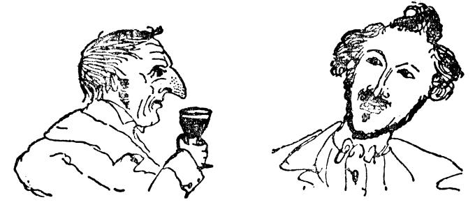
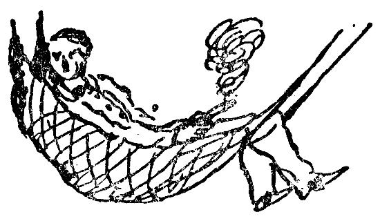

致玛丽亚·恩格斯
曼海姆
1840年8月20―25日于不来梅
第一次发表于1920年《德意志评论》杂志第4卷（斯图加特和莱比锡）
原文是德文
我最亲爱的妹妹：
刚刚收到你的来信，此刻我正好无事可做，所以就给你写几行。我们的商行有了重大的改进。在过去，刚吃过饭马上就要令人十分反感地坐到办公桌旁，那时是何等的困倦啊；为了革除这种缺点，我们在仓库的凉台上挂了两张漂亮的吊床，午饭后在吊床上抽着雪茄，摇摇晃晃，有时打个盹儿。我相信你会认为这种新的安排是非常合适的。今天上午我也收到罗特的信。在离开了四个月以后，他将于下星期天回到这里。这样，你将知道，一千七百马克的银行券，按百分之一百三十七计算，折合金路易为七百七十六塔勒二十四格罗特。我计算过两遍，准确无误。现附上版画一幅。一个年老的品酒行家，接过一杯酸酒。在他旁边的是卖酸酒给他的推销员。我再给你画一幅这里的年轻人的发型。

真倒霉！写好这封信后，我回家吃饭，回来时，点上雪茄并打算躺到吊床上去。但吊床这时掉下来了，当我重新钉钉子时，讨厌的德克希姆叫我了，所以我现在已不能离开商行。
感谢上帝！我终于保住了我的午间休息！我悄悄溜出商行，拿了雪茄和火柴，要了啤酒，然后爬到仓库凉台的上层，躺上吊床，轻轻地摇晃着。后来我到仓库的中层，包装了两箱亚麻布；这段时间里，我抽完一支雪茄，喝了一瓶啤酒，全身被汗水湿透了。今天酷热，尽管我伤风刚好，但我又想到威悉河去洗澡。不久前我去游过一次，请了一个小伙子划着船跟在我后面；我一口气在威悉河游了四个来回。在我看来，不来梅未必有人能在这方面仿效我。
真倒霉！倒霉的原因有两个：一、正在下雨；二、我这位可爱的年轻主人FN1总不愿意离开商行，因此我又只好熄灭自己的雪茄。但是我尽量设法把他赶走。你猜，我怎样做到这一点的？我跑到厨房去大叫：“克里斯蒂娜，给我一个拔塞器！”然后我拔开啤酒瓶塞，给自己斟了一杯。如果他还有哪怕半点良心，在我这样做了以后，他就该走出去了，因为这就等于说：“走开，唐·威廉！”
你的英语现在讲得很出色了吧！等你回家的时候，我教你学丹麦语和西班牙语，使你能用别人不懂的语言和我讲话。Danske Sprag fagre Sprag，y el Español es lengua muy hermosaFN2.或者你更喜欢葡萄牙语吧？O portugues he huma lengoa muito graçosa，e os Portuguezes saõ naçaõ muito respeitavelFN3.但这些你还完全不懂，所以我原谅你。
这里你可以看到我的吊床以及我躺在吊床里吸烟的情形。

刚才我听说又卖了五百箱即二十五万磅砂糖；这样一来，我们就可以给不少杯咖啡加糖了！你杯子里的砂糖说不定正是来自我取样的那一箱，可谁知道呢！不过你们莱茵河畔的砂糖全部来自荷兰，而荷兰的砂糖是用破烂FN4制造的，但这里指的是破烂砂糖块而非破烂布块。
距离这里三小时路程的法尔肯贝格不久将举行大规模演习，不来梅、汉堡、卢卑克及奥登堡等地的士兵将组成整整一个团在那里进行表演。这是一些十分可怜的士兵，他们中间三个人的胡子加起来还没有我三天未刮过的胡子多。这些士兵军服上的根根棉纱都可以数出来；他们佩的不是军刀，而是肥鳗。“肥鳗”就是熏鳗，士兵们这样来称呼他们插刺刀的皮刀鞘，他们用皮刀鞘代替军刀。如果枪上了刺刀的话，这些可怜虫在操练时，经常有相互刺伤脸的危险，可见他们把刺刀挂在背后是很有道理的。这是一些可怜的家伙，卡舒布人和懒汉。
不知道还有什么话该对你讲。
我答应要写完这一页信纸，
上帝啊，要用钳子才能拔出我的话！
我评说诗歌只有寥寥数行，
很难将我贫乏的思想描述得又多又长。
且用拙诗数行作为收场，
但不知佩格斯对此是否心满意畅？
它直立起来将骑者摔落……
黄昏来临，远处徐徐垂下夜幕。
只有西方的朵朵晚霞映红天空——
这是圣火，是庄严的火炬，
它把我们时刻感到欢乐的白昼埋葬……
白昼逝去。夜幕降临——
在茫茫黑夜里，
灿烂的繁星却静悄悄地闪烁在沉睡大地的上空。
是呵，万籁无声。
鸟儿到窝里藏身，
野兽在灌木丛中安眠，
小甲虫睡了，它们也需要休息。
喧嚣生活的大门又重新关闭，
仿佛处在创世的第三天，
世界还不是万物皆备，
只有草木，尚无野兽，
——现在又正是如此，
只有轻风穿过树梢歌唱赞美诗。
那是万能的主在呼吸，
他把雄壮的歌声送到大地，
将乌云赶离海滨。
他永远呼吸，永远年轻，
而我却感到气促力尽。
就写到这里。如果你看懂了，这就说明你有教养而且能使谈话继续下去。AdiosFN5.
40年8月20日于不来梅
你的 弗里德里希
8月25日。罗特前天又回来了。
脚 注
FN1 威廉·洛伊波尔德。——编者注
FN2 丹麦语是一种有魅力的语言，西班牙语则是一种很优美的语言。——编者注
FN3 葡萄牙语很优雅，葡萄牙人是个很值得尊敬的民族。——编者注
FN4 文字游戏：“Lumpen”——“破烂”，也有“糖块”之意。——编者注
FN5 再见。——编者注